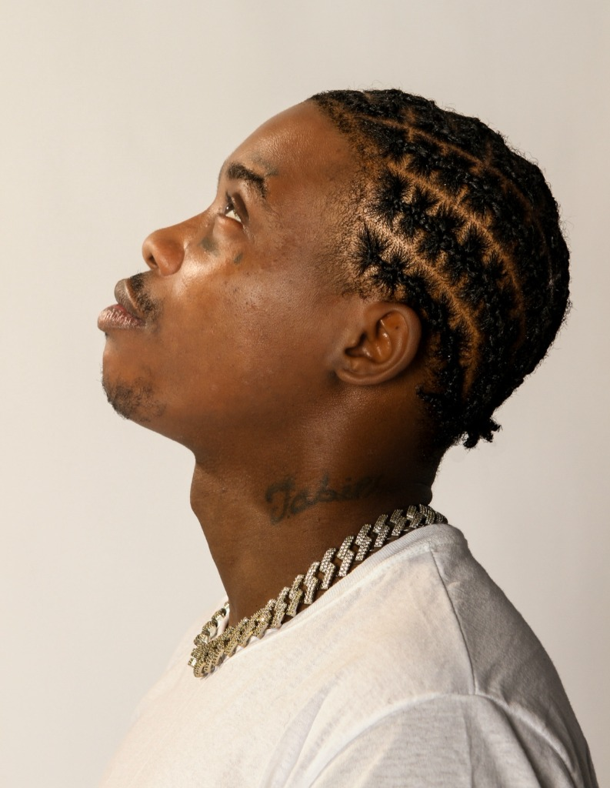
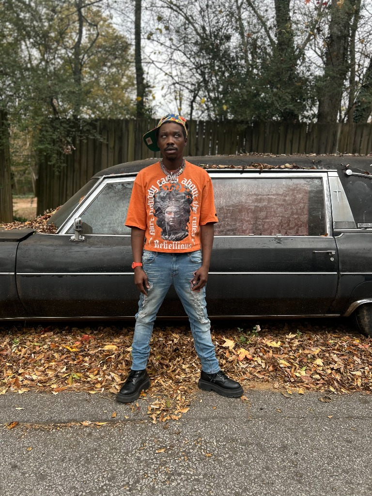
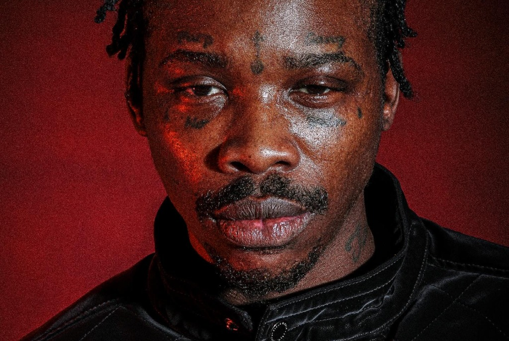
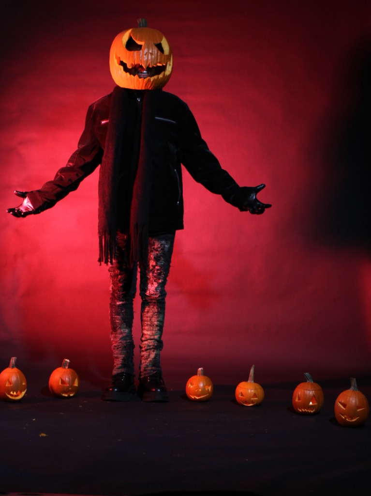

About
Tevin Montrel Snowden — professionally known as @675huncho and by his rap moniker Dutch Cappone — is a multi-talented actor, rapper, comedian, and digital entrepreneur originally from East Atlanta, Georgia.
He has built a significant following online, generating tens of millions of views across social media platforms like Instagram.

Watch
Photos



Connect
Follow the movement. New music, videos and comedy drops — first on social.